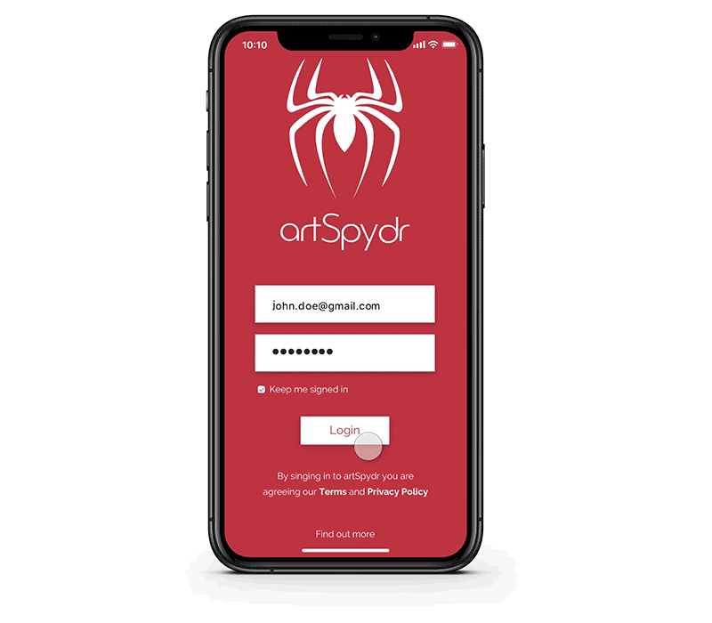
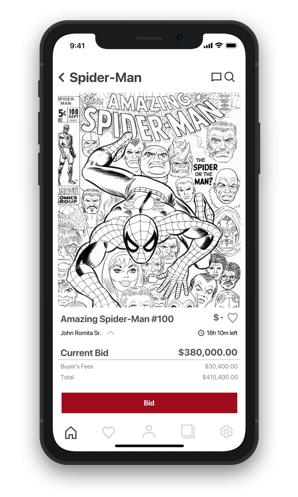
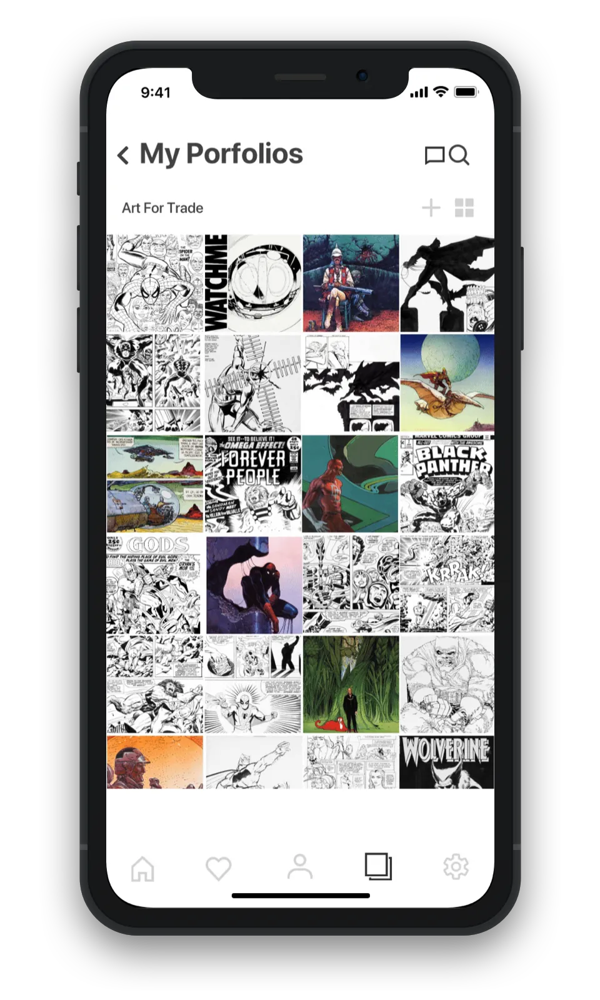
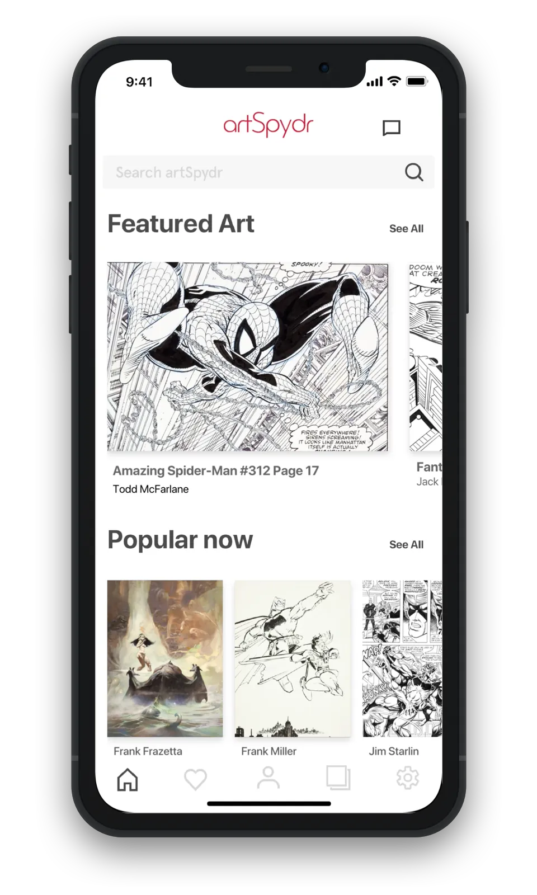
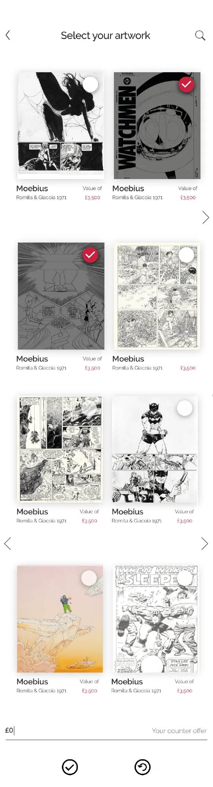
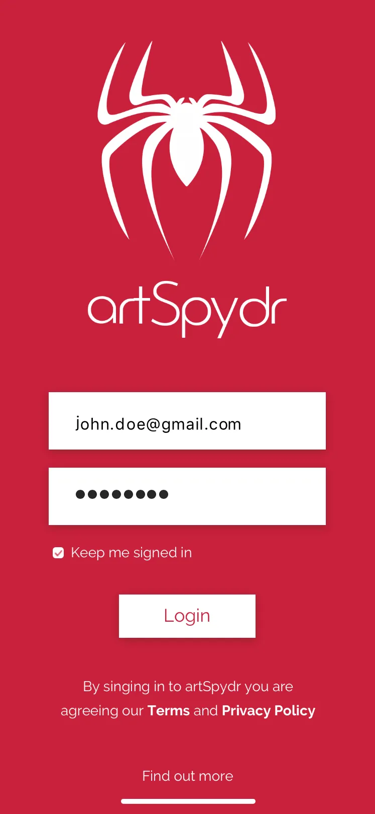
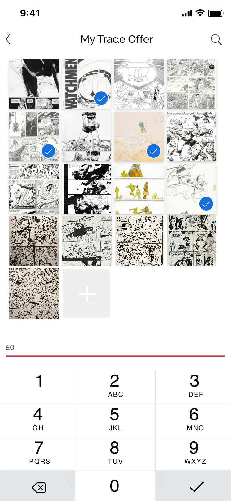
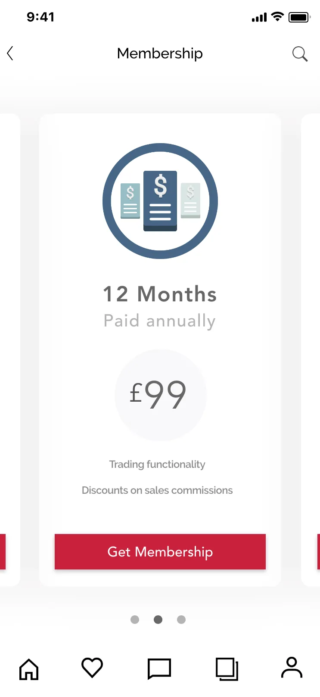
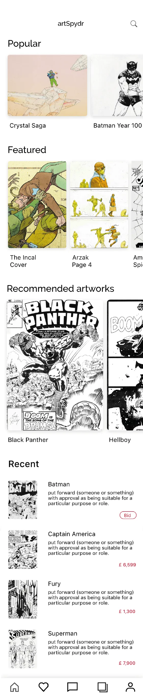

artSpydr is a global peer-to-peer marketplace designed to facilitate the buying, selling, and trading of original comic art while ensuring authenticity through blockchain technology. artSpydr merges the accessibility of eBay with the assurance of an auction house, offering a reliable platform for art enthusiasts worldwide.

My Role
As the product designer at artSpydr, I took care of market and user research, conducted user interviews, and crafted wireframes and prototypes.
Collaborating with a project manager, a CTO, and two React Native developers, I contributed to the design of the web and app interfaces, including a tracking system and bespoke branded packaging.
Noteworthy achievements include iterative design improvements driven by stakeholder input, securing funding, and addressing user pain points for enhanced engagement and satisfaction.
Problem
artSpydr addresses a gap in the market where collectors lack a cost-effective, end-to-end secure platform for transacting art. Current challenges include exorbitant fees from auction houses, the insecurity of peer-to-peer marketplaces, time-consuming direct transactions, the absence of indisputable provenance, and a lack of reliable valuation methods.



UX Goals
The primary goal of artSpydr is to provide a uniquely convenient and secure platform for global art transactions. The platform aims to match buyers and sellers efficiently, charging a fair commission, coordinating transactions, verifying art through a Machine Learning AI system, recording art on the Comic Art Blockchain for provenance, and offering additional services such as courier, insurance, and secure packaging.

Design Process
I initiated the design journey by testing high-fidelity prototypes. This strategic decision allowed me to uncover potential issues early on, refine design elements based on user feedback, and optimise the user interface for enhanced the usability.
Prioritising user-centricity, this phase served as a crucial foundation before diving into coding, mitigating risks, and aligning the design closely with user expectations.
A distinctive aspect of our design exploration involved testing the auction system with unique counter features using no-code platforms like Webflow. By simulating a live auction environment, we got collector interest and participation levels without committing to full-scale development.
This approach not only provided valuable insights into user interactions but also enabled me to refine features based on real-world scenarios.
Pain Points and Solutions
Blockchain for Provenance Technical Solution
To address the growing importance of provenance, artSpydr employs The Comic Art Blockchain to encrypt, record, and tag art. The aim is to initiate a historical process for provenance and chain of ownership in the original comic art market.
The solution I found was to design a robust proof of provenance tracking record that updates in real-time with every transaction. Creating a system that seamlessly captures and reflects the chain of ownership for each piece of art sold on the platform required a careful balance between user transparency and data privacy.
Logistics – Transit Insurance, Tracking, and Shipping
Ensuring an enriched transaction experience, artSpydr provides options for GPS-tracked transportation to local offices, bespoke courier services, transit insurance, and custom-designed packaging.
The UX solution was updating the booking screen for the courier service, introducing the option to use GPS trackers. Given the constraints of tracker availability and cost-effectiveness, the design needed to provide a seamless booking experience while communicating limitations transparently.
Secure, Hassle-Free Packaging
I designed artSpydr's custom packaging incorporating a GPS tracker. With an inner carton for protection and an outer triple-walled transit sleeve for the GPS tracker, the packaging process is streamlined, ensuring the safe delivery of verified artwork.
Beyond the technical considerations, the design challenge involved visually guiding users on how to employ the packaging effectively. Ensuring the tracking process preserves the anonymity of both the seller and buyer, adding an extra layer of complexity.
Art Verification
by experts
artSpydr positioned itself as the intermediary expert in verifying artwork, a dedicated page was needed to keep both sellers and buyers informed about the status of the verification process.
UX solution was designing a visually intuitive interface that depicted the various stages of art verification while maintaining transparency and instilling confidence in users posed its own set of challenges.
Project Takeaways
Through the artSpydr project, we successfully created a secure, user-centric marketplace that addresses the pain points of collectors and artists alike. The integration of innovative technologies such as blockchain and GPS tracking elevates the platform, making it a reliable and efficient solution for the global art community. The emphasis on user experience and meticulous design choices positions artSpydr as a groundbreaking player in the comic art market.



